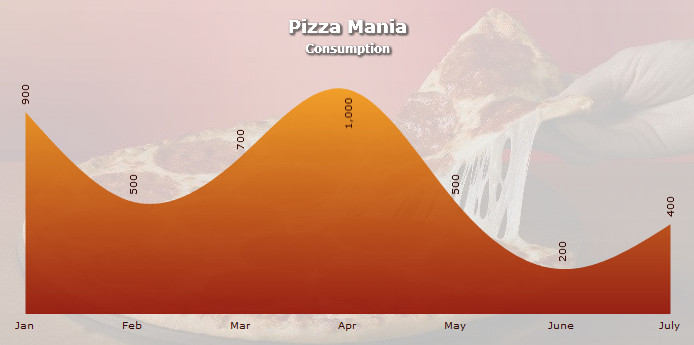
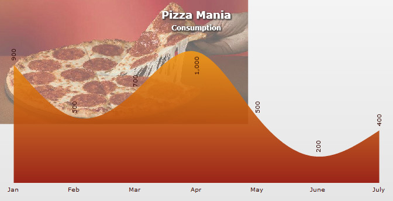

PowerCharts XT allows you to easily set a background image/movie for your chart. You can use this option to embed background images (GIF, JPEG, or PNG), other SWF Files, or data tables (in image format) as your chart background.
To embed an image, all you need to do is set bgImage property of <chart> element. Additionally, you can also do a lot more configurations like setting transparency, scale, stretch, tile etc. We will learn about each of these in details soon in this page.
Click here to explore all the configurable options of background image using an interactive demo.
Let us first see how we may use the bgImage property in a chart, as shown below:
<chart caption="Pizza Mania" subcaption="Consumption" palettecolors="880000,880000" plotgradientcolor="fba71a" showplotBorder="0" plotfillalpha="90,90" canvasbgalpha="0" numdivlines="0" showyaxisvalues="0" rotateValues="1" formatNumberScale="0" canvasborderalpha="0" bgImage="pizza.jpg" > <set label="Jan" value="900" /> <set label="Feb" value="500" /> <set label="Mar" value="700" /> <set label="Apr" value="1000" /> <set label="May" value="500" /> <set label="June" value="200" /> <set label="July" value="400" /> <styles> <definition> <style name="ani" type="animation" DURATION="3" easing="bounce" start="0" param="_xscale"/> <style name="myFont" type="font" color="390D07"/> <style name="myFontCaption" type="font" size="18" color="ffffff" /> <style name="myFontSubCaption" type="font" size="12" color="ffffff"/> <style name="myShadow" type="shadow" color="333333" angle="45" strength="3"/> </definition> <application> <apply toObject="Dataplot" styles="ani"/> <apply toObject="Datavalues" styles="myFont"/> <apply toObject="Datalabels" styles="myFont"/> <apply toObject="caption" styles="myFontCaption,myShadow"/> <apply toObject="subcaption" styles="myFontSubCaption,myShadow"/> </application> </styles> </chart>
{
"chart": {
"caption": "Pizza Mania",
"subcaption": "Consumption",
"palettecolors": "880000,880000",
"plotgradientcolor": "fba71a",
"showplotborder": "0",
"plotfillalpha": "90,90",
"canvasbgalpha": "0",
"numdivlines": "0",
"showyaxisvalues": "0",
"rotatevalues": "1",
"formatnumberscale": "0",
"canvasborderalpha": "0",
"bgimage": "pizza.jpg"
},
"data": [
{
"label": "Jan",
"value": "900"
},
{
"label": "Feb",
"value": "500"
},
{
"label": "Mar",
"value": "700"
},
{
"label": "Apr",
"value": "1000"
},
{
"label": "May",
"value": "500"
},
{
"label": "June",
"value": "200"
},
{
"label": "July",
"value": "400"
}
],
"styles": {
"definition": [
{
"name": "ani",
"type": "animation",
"duration": "3",
"easing": "bounce",
"start": "0",
"param": "_xscale"
},
{
"name": "myFont",
"type": "font",
"color": "390D07"
},
{
"name": "myFontCaption",
"type": "font",
"size": "18",
"color": "ffffff"
},
{
"name": "myFontSubCaption",
"type": "font",
"size": "12",
"color": "ffffff"
},
{
"name": "myShadow",
"type": "shadow",
"color": "333333",
"angle": "45",
"strength": "3"
}
],
"application": [
{
"toobject": "Dataplot",
"styles": "ani"
},
{
"toobject": "Datavalues",
"styles": "myFont"
},
{
"toobject": "Datalabels",
"styles": "myFont"
},
{
"toobject": "caption",
"styles": "myFontCaption,myShadow"
},
{
"toobject": "subcaption",
"styles": "myFontSubCaption,myShadow"
}
]
}
}
In the above code, we are:
- Loading a background image pizza.jpg by setting it as bgImage attribute. If your image file is in a different location, you will need to specify the relative path. Note that due to security restrictions, your image file has to reside on the same sub-domain as chart SWF File and a relative path to the same has to be specified.
- Setting canvas alpha as 0, so that it becomes see-through for the background to appear.
- Defining styles for formatting of other chart elements.
When you view this chart (with the background image), you will get something as under:
See a similar example live!
Simple and effective - isn't it?
Existing users: You might be wondering what happened to the bgSWF attribute which you have been using. Starting PowerCharts XT, use of bgSWF and bgSWFAlpha is deprecated. However, you can continue to use this parameter in your existing code without any problem.
In the following sections of this page we will learn how the background image can be configured.
PowerCharts XT allows you to configure the background images. You can configure the following:
In the following sections, we will discuss how to implement the above given configurations on the background image.
You can set the transparency of the image using the bgImageAlpha attribute.The default value of this attribute is '100'. The image remains fully opaque when 100 is set. 0 (zero) turns the image completely transparent. An example code setting the background image 30% transparent is shown as under:
In the above code, we have added the attribute bgImageAlpha='30'. The chart will look as under:

Existing users: You might be wondering what happened to the bgSWFAlpha attribute which you have been using. Starting PowerCharts XT, use of bgSWF and bgSWFAlpha is deprecated. However, you can continue to use this parameter in your existing code without any problem.
You can also increase or decrease the magnification of the background image. To customize the magnification of the background image the attribute bgImageScale is used. The value of this attribute can be anything between 0-300. The default value of the attribute is 100. Any value less than 100 will reduce the size of the background image and any value more than 100 will increase the size of the background image.
The chart for the above code will look as under:
You can set the position of the background image on the chart according to your choice by altering the vertical and horizontal alignments of the background image. The two attributes used to set the alignments are bgImageVAlign (top, middle, bottom) and bgImageHAlign (left, middle, right). The default value of these two attributes are bgImageVAlign='top' and bgImageHALign='left'. By default, the background image will appear on the top-left position of the chart.
 |
 |
 |
| bgImageVAlign='top' bgImageHAlign='left' |
bgImageVAlign='top' bgImageHAlign='middle' |
bgImageVAlign='top' bgImageHAlign='right' |
 |
 |
 |
| bgImageVAlign='middle' bgImageHAlign='left' |
bgImageVAlign='middle' bgImageHAlign='middle' |
bgImageVAlign='middle' bgImageHAlign='right' |
 |
 |
 |
| bgImageVAlign='bottom'
bgImageHAlign='left' |
bgImageVAlign='bottom' bgImageHAlign='middle' |
bgImageVAlign='bottom' bgImageHAlign='right' |
A background image can be displayed using one of the various modes of display. The form can be changed using the bgImageDisplayMode attribute. The values of this attribute are none, center, stretch, tile, fit and fill. By default, the value of the attribute is set to none. Examples with different display modes are shown below:
 |
| none - The original image is placed at the top left corner of the background (default mode) |
 |
| Center - The image is positioned at the center of the chart area |
 |
| Stretch - Expands the image to fit the entire chart area, without maintaining original image constraints |
 |
| Tile - The image is repeated as a pattern on the entire chart area |
 |
| Fit - Fits the image proportionately on the chart area |
 |
| Fill - Proportionately fills the entire chart area with the image |